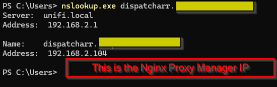
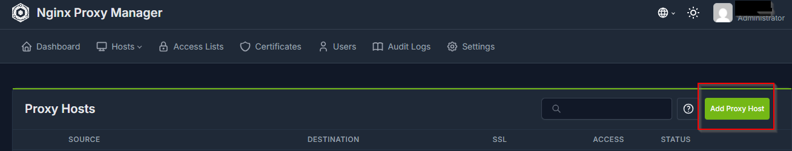
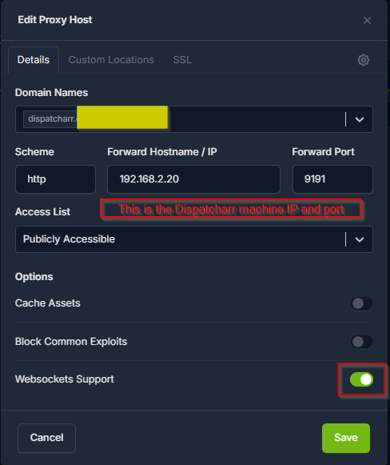
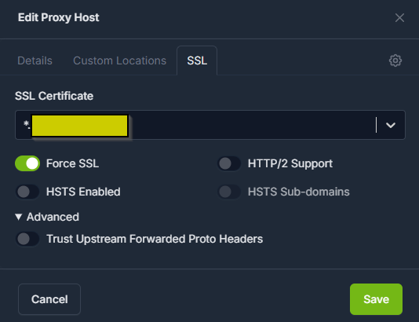
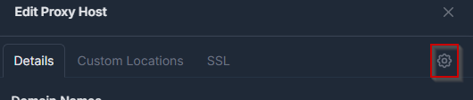
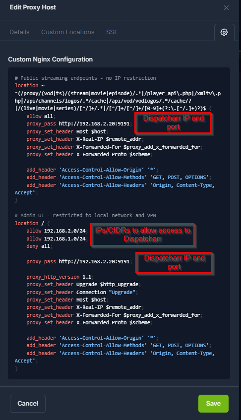
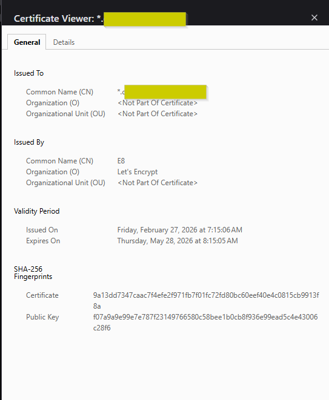
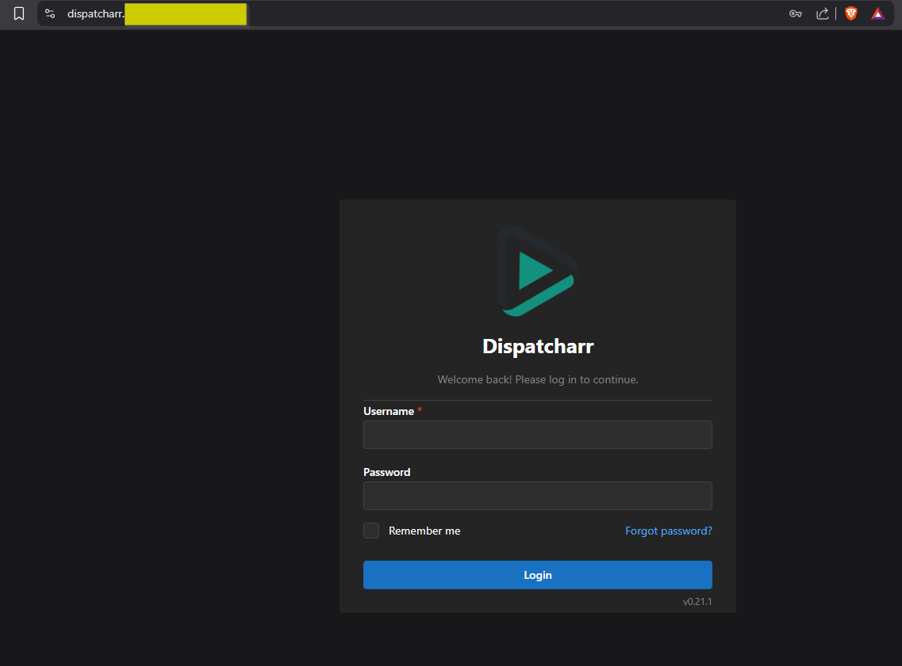
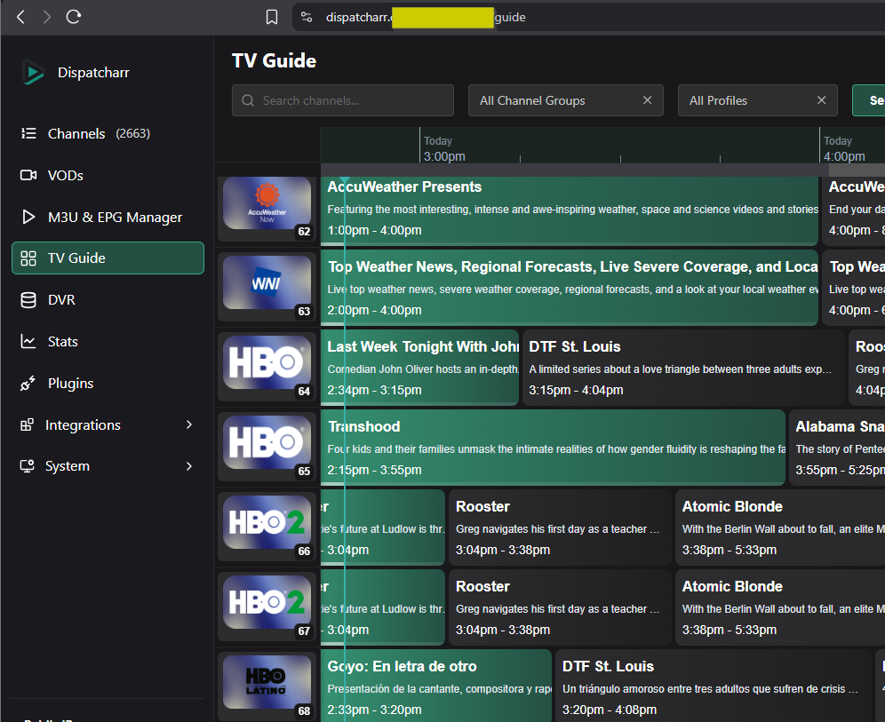

Advanced
Aceleração de Hardware¶
- O Dispatcharr atualmente não suporta aceleração de hardware diretamente, mas você pode usar aceleração de hardware com perfis de stream ffmpeg personalizados.
- Isso requer mapear seu hardware para o contêiner e configurar um perfil de stream ffmpeg personalizado.
Mapeando Hardware¶
- Instale o NVIDIA Container toolkit
- Adicione uma seção deploy ao seu docker-compose.yml
Example
services:
dispatcharr:
# build:
# context: .
# dockerfile: Dockerfile
image: ghcr.io/dispatcharr/dispatcharr:latest
container_name: dispatcharr
ports:
- 9191:9191
volumes:
- dispatcharr_data:/data
environment:
- DISPATCHARR_ENV=aio
- REDIS_HOST=localhost
- CELERY_BROKER_URL=redis://localhost:6379/0
deploy:
resources:
reservations:
devices:
- driver: nvidia
count: all
capabilities: [gpu]
volumes:
dispatcharr_data:
- Adicione uma seção devices ao seu docker-compose.yml
Example
services:
dispatcharr:
# build:
# context: .
# dockerfile: Dockerfile
image: ghcr.io/dispatcharr/dispatcharr:latest
container_name: dispatcharr
ports:
- 9191:9191
volumes:
- dispatcharr_data:/data
environment:
- DISPATCHARR_ENV=aio
- REDIS_HOST=localhost
- CELERY_BROKER_URL=redis://localhost:6379/0
devices:
- /dev/dri:/dev/dri
volumes:
dispatcharr_data:
- Instale o plugin NVIDIA Driver Package dos apps da comunidade se ainda não estiver instalado
- Edite o contêiner docker do Dispatcharr no Unraid
- Ative Advanced View
- Vá para Extra Parameters
- Adicione
--runtime=nvidia
- Adicione
- Role para baixo e clique em "Add another Path, Port, Variable, Label or Device"
- Config Type: Variable
- Name:
NVIDIA_VISIBLE_DEVICES - Key:
NVIDIA_VISIBLE_DEVICES - Value:
all
- Clique em Save
- Clique novamente em "Add another Path, Port, Variable, Label or Device"
- Config Type: Variable
- Name:
NVIDIA_DRIVER_CAPABILITIES - Key:
NVIDIA_DRIVER_CAPABILITIES - Value:
all
- Clique em Save
- Edite o contêiner docker do Dispatcharr no Unraid
- Role para baixo e clique em "Add another Path, Port, Variable, Label or Device"
- Config Type: Device
- Name:
/dev/dri - Key:
/dev/dri - Description:
Intel GPU
- Clique em Save
Perfis de Stream Personalizados¶
- Abra o Dispatcharr
-
Navegue até Settings > Add Stream Profile
- Dê o nome que quiser
- Command
ffmpeg - Os parâmetros variarão com base no tipo de hardware e nas necessidades de streaming
- Consulte a documentação do ffmpeg para mais informações
- Visite nosso discord para mais parâmetros ffmpeg enviados por usuários
Example
- Parameters:
-user_agent {userAgent} -hwaccel cuda -i {streamUrl} -c:v h264_nvenc -c:a copy -f mpegts pipe:1
Example
- Parameters:
-user_agent {userAgent} -hwaccel vaapi -hwaccel_output_format vaapi -hwaccel_device /dev/dri/renderD128 -i {streamUrl} -c:a aac -c:v h264_vaapi -f mpegts pipe:1
Example
- Parameters:
-hwaccel qsv -user_agent {userAgent} -i {streamUrl} -c:v h264_qsv -c:a aac -f mpegts pipe:1
Configuração de Prioridade de Processo¶
Variáveis de ambiente opcionais para ajustar a prioridade de várias tarefas. Valores menores = prioridade maior. Intervalo: -20 (mais alta) a 19 (mais baixa). Valores negativos requerem cap_add: SYS_NICE
UWSGI_NICE_LEVEL- Define a prioridade para uWSGI, FFmpeg e streaming. Prioridade padrão é 0, recomendado -5 para alta prioridadeCELERY_NICE_LEVEL- Define a prioridade para Celery, EPG e outras tarefas em segundo plano. Prioridade padrão é 5
Proxies Reversos¶
Nginx¶
Exemplo de configuração HTTPS (streams apenas via https, WebUI via rede local e Wireguard)
Exemplo (clique para ver)
# Dispatcharr HTTPS DynuDNS
server {
listen 443 ssl;
server_name dispatcharr.your.domain.com; #Adjust for your domain
ssl_certificate /etc/letsencrypt/live/yourdomain.com/fullchain.pem;
ssl_certificate_key /etc/letsencrypt/live/yourdomain.com/privkey.pem;
location ~ ^(/proxy/(vod|ts)/(stream|movie|episode)/.*|/player_api\.php|/xmltv\.php|/api/channels/logos/.*/cache|/api/vod/vodlogos/.*/cache/?|/(live|movie|series)/[^/]+/.*|/[^/]+/[^/]+/[0-9]+(?:\.[^/.]+)?)$ {
allow all; # Allow everyone else
proxy_pass http://dispatcharrserver:9191; # Adjust for your server name or IP
proxy_set_header Host $host:443;
proxy_set_header X-Real-IP $remote_addr;
proxy_set_header X-Forwarded-For $proxy_add_x_forwarded_for;
proxy_set_header X-Forwarded-Proto $scheme;
# CORS settings
add_header 'Access-Control-Allow-Origin' '*';
add_header 'Access-Control-Allow-Methods' 'GET, POST, OPTIONS';
add_header 'Access-Control-Allow-Headers' 'Origin, Content-Type, Accept';
}
location / {
allow 10.0.0.0/22; # Allow the local network, adjust for your network
allow 10.1.0.0/24; # Allow Wireguard, adjust for your network
deny all; # Deny everyone else
proxy_pass http://dispatcharrserver:9191; # Adjust for your server name or IP
# WebSocket headers
proxy_set_header Upgrade $http_upgrade;
proxy_set_header Connection "Upgrade";
proxy_set_header Host $host:443;
proxy_set_header X-Real-IP $remote_addr;
proxy_set_header X-Forwarded-For $proxy_add_x_forwarded_for;
proxy_set_header X-Forwarded-Proto $scheme;
# CORS settings
add_header 'Access-Control-Allow-Origin' '*';
add_header 'Access-Control-Allow-Methods' 'GET, POST, OPTIONS';
add_header 'Access-Control-Allow-Headers' 'Origin, Content-Type, Accept';
}
}
Dica
Mesmo com um proxy reverso configurado corretamente, sua saída M3U pode estar disponível na internet. Siga estas boas práticas para bloquear o acesso padrão ao M3U e permitir apenas com nome de usuário e senha especificados.
- Configure seu proxy reverso conforme mostrado na documentação
- No Dispatcharr em Settings > Network Access, restrinja os M3U / EPG Endpoints apenas à sua rede local (exemplo: 192.168.1.0/24)
- Configure um usuário com senha XC na página Users se ainda não o fez
- Use o seguinte formato de link m3u para compartilhar com seus usuários:
https://hostname/get.php?username=XCUSERNAME&password=XCPASSWORD - E este formato para epg:
https://hostname/xmltv.php?username=XCUSERNAME&password=XCPASSWORD
Pangolin¶
- Crie seu recurso como faria com qualquer outro no Pangolin
- Se você está hospedando o Dispatcharr no mesmo VPS (se estiver usando um VPS) que o Pangolin, certifique-se de defini-lo como recurso local e use 172.XX.X.X como IP, depois insira a porta. Caso contrário, configure normalmente
- Se quiser ativar o SSO do Pangolin para este recurso por segurança, faça isso na aba Authentication do seu novo recurso Dispatcharr
Para permitir que o Dispatcharr se conecte aos clientes quando protegido pelo SSO do Pangolin ou outro IdP que você adicionou, você precisa criar Bypass Rules. Veja abaixo a lista de regras necessárias. Uma vez salvas as regras abaixo, a WebUI do Dispatcharr estará protegida pelo seu SSO enquanto apps e serviços poderão se conectar via XC
- A "Action" será
Bypass Authpara todas elas - O "Match Type" será
Pathpara todas elas
Regras de bypass (clique para ver)
/player_api.php/*/get.php/*/xmltv.php/*/*/*/*.ts/proxy/ts/stream/*/proxy/vod/episode/*/proxy/vod/movie/*/api/channels/logos/*/cache//live/*/*/movie/*/*/series/*/*
(Opcional para acesso via URL HDHR, M3U e/ou EPG, não obrigatório se usar XC. Se estiver usando HDHR, M3U ou EPG, você deve restringir ainda mais nas Settings > Network Access > M3U / EPG Endpoints) do Dispatcharr. Caso contrário, seus links HDHR, M3U e/ou EPG ficarão publicamente acessíveis pela internet
/hdhr/*/output/m3u/*/output/epg/*
-
Se quiser configurar GeoBlock para qualquer/todos os recursos, consulte a documentação oficial do Pangolin para orientação
-
Teste sua nova configuração navegando até o Dispatcharr em uma janela anônima ou privada. Você deve agora ser recebido com o painel de login do Pangolin ao acessar a WebUI quando não estiver autenticado, no entanto seus clientes ainda poderão se conectar para permitir o streaming
Nginx Proxy Manager¶
Siga estes passos para configurar o acesso ao Dispatcharr através do Nginx Proxy Manager. Este guia pressupõe que o Nginx Proxy Manager já esteja configurado e com certificados SSL configurados. Configurar o Nginx Proxy Manager e certificados está fora do escopo deste guia. Você pode encontrar informações de configuração no guia de instalação do Nginx Proxy Manager e neste blog.
- Isso foi criado na versão 2.14.0 do Nginx Proxy Manager. Outras versões não foram testadas
- O domínio está oculto por privacidade. Você pode comprar um domínio ou criar um domínio de uso local. Configurar um domínio está fora do escopo, mas há muitos guias que cobrem isso
-
Configure o Nginx Proxy Manager. Consulte o link acima para instruções
-
Crie uma entrada DNS resolvendo o nome de domínio do Dispatcharr para o IP LAN do Nginx Proxy Manager
- Este passo depende do roteador que você usa
Captura de tela

-
Crie um novo proxy host no Nginx Proxy Manager
Captura de tela

-
Insira o nome de domínio criado no passo 2
-
Scheme:
http -
Forward Hostname/IP:
<Endereço IP do servidor Dispatcharr> -
Forward port:
9191 -
Selecione
Websockets SupportCaptura de tela

Note
A configuração SSL personalizada adicionada no passo 14 também define o suporte a Websocket. Testamos com
Websocket Supportativado e desativado e não notamos diferença -
Selecione SSL (na aba superior sob
Edit Proxy Host) -
Escolha seu certificado SSL
-
Criar certificados SSL está fora do escopo deste guia. Consulte o link acima para a documentação de instalação do Nginx Proxy Manager
-
Recomendamos configurar certificados SSL wildcard para seu domínio. Se usar Cloudflare para seu domínio, consulte este guia para instruções
-
-
Selecione
Force SSLCaptura de tela

-
Selecione a aba
Details -
Selecione o ícone de engrenagem para configuração personalizada do Nginx
Captura de tela

-
Cole o exemplo de configuração abaixo, certificando-se de alterar os nomes das variáveis conforme necessário. As variáveis estão entre <> e TODAS EM MAIÚSCULAS. Os valores a alterar são o IP do Nginx Proxy Manager e o IP do Dispatcharr
Exemplo (clique para ver)
# Dispatcharr HTTPS Nginx Proxy Manager location ~ ^(/proxy/(vod|ts)/(stream|movie|episode)/.*|/player_api\.php|/xmltv\.php|/api/channels/logos/.*/cache|/api/vod/vodlogos/.*/cache/?|/(live|movie|series)/[^/]+/.*|/[^/]+/[^/]+/[0-9]+(?:\.[^/.]+)?)$ { allow all; proxy_pass http://<ENDEREÇO IP DO DISPATCHARR>:9191; proxy_set_header Host $host; proxy_set_header X-Real-IP $remote_addr; proxy_set_header X-Forwarded-For $proxy_add_x_forwarded_for; proxy_set_header X-Forwarded-Proto $scheme; add_header 'Access-Control-Allow-Origin' '*'; add_header 'Access-Control-Allow-Methods' 'GET, POST, OPTIONS'; add_header 'Access-Control-Allow-Headers' 'Origin, Content-Type Accept'; } # Restrict access. In this instance all traffic to Dispatcharr flows through proxy. You can add another allow block if you want to allow traffic not through the proxy. location / { allow <ENDEREÇO IP DO NPM>/32; deny all; proxy_pass http://<ENDEREÇO IP DO DISPATCHARR>:9191; proxy_http_version 1.1; proxy_set_header Upgrade $http_upgrade; proxy_set_header Connection "Upgrade"; proxy_set_header Host $host; proxy_set_header X-Real-IP $remote_addr; proxy_set_header X-Forwarded-For $proxy_add_x_forwarded_for; proxy_set_header X-Forwarded-Proto $scheme; add_header 'Access-Control-Allow-Origin' '*'; add_header 'Access-Control-Allow-Methods' 'GET, POST, OPTIONS'; add_header 'Access-Control-Allow-Headers' 'Origin, Content-Type Accept'; }Captura de tela

-
Selecione
Save -
Verifique o acesso visitando o nome DNS do Dispatcharr no navegador. Verifique se o certificado SSL é válido.
Captura de tela

-
Faça login e aproveite!
Captura de tela


Note
Se você apontar o Pangolin para o Nginx Proxy Manager como recurso, pode acessar o Dispatcharr através dele em vez de criar uma nova entrada.
Segurança de Conexão¶
O TLS criptografa conexões entre o Dispatcharr e serviços externos Redis/PostgreSQL em implantações modulares. Isso impede que credenciais e dados sejam enviados em texto puro pela rede.
Note
A segurança de conexão está disponível apenas no modo de implantação modular. O modo AIO usa serviços internos que não requerem criptografia.
Visão Geral¶
Três níveis de segurança de conexão são suportados:
| Nível | O que faz | Quando usar |
|---|---|---|
| TLS | Criptografa o tráfego entre o Dispatcharr e o banco de dados | Conexões cruzam um limite de rede |
| TLS + Verificação de Servidor | Criptografa o tráfego e verifica a identidade do servidor usando um certificado CA | Proteção contra ataques man-in-the-middle |
| Mutual TLS (mTLS) | Ambos os lados verificam um ao outro com certificados | O servidor de banco de dados requer autenticação de cliente |
Cada nível se baseia no anterior. Você pode ativar a criptografia sem verificação, ou verificação sem mutual TLS.
Volume Mount de Certificados¶
A verificação de servidor e o mutual TLS requerem que os arquivos de certificado estejam acessíveis dentro do contêiner. Se você estiver apenas criptografando a conexão sem verificação, nenhum arquivo de certificado é necessário.
Monte um diretório contendo seus certificados como volume somente leitura:
Monte o mesmo volume nos serviços web e celery.
Redis TLS¶
| Variável | Obrigatório | Descrição |
|---|---|---|
REDIS_SSL |
Sim | Defina como true para ativar TLS |
REDIS_SSL_VERIFY |
Não | Verifica a identidade do servidor (padrão: true). Defina como false para certificados autoassinados sem CA |
REDIS_SSL_CA_CERT |
Não | Caminho para o certificado CA usado para verificar o servidor |
REDIS_SSL_CERT |
Não | Caminho para o certificado do cliente (apenas se o servidor requer autenticação de cliente) |
REDIS_SSL_KEY |
Não | Caminho para a chave privada do cliente (apenas se o servidor requer autenticação de cliente) |
Redis TLS — criptografado com verificação de servidor
Redis mTLS — autenticação mútua
PostgreSQL TLS¶
| Variável | Obrigatório | Descrição |
|---|---|---|
POSTGRES_SSL |
Sim | Defina como true para ativar TLS |
POSTGRES_SSL_MODE |
Não | Quão rigorosamente verificar o servidor (padrão: verify-full. Opções: verify-full, verify-ca, require |
POSTGRES_SSL_CA_CERT |
Não | Caminho para o certificado CA usado para verificar o servidor |
POSTGRES_SSL_CERT |
Não | Caminho para o certificado do cliente (apenas se o servidor requer autenticação de cliente) |
POSTGRES_SSL_KEY |
Não | Caminho para a chave privada do cliente (apenas se o servidor requer autenticação de cliente) |
Modos de verificação:
verify-full— verifica o certificado do servidor e confere se o hostname corresponde (mais seguro, padrão)verify-ca— verifica o certificado do servidor mas não confere o hostnamerequire— criptografa a conexão mas não verifica a identidade do servidor
PostgreSQL TLS — criptografado com verificação completa
PostgreSQL TLS — criptografado, sem verificação
PostgreSQL mTLS — autenticação mútua
Notas Importantes¶
- As variáveis de ambiente TLS devem corresponder entre os serviços
webecelery - Os caminhos dos certificados referem-se a caminhos dentro do contêiner, não no host
- O Dispatcharr valida os caminhos dos arquivos de certificado na inicialização e falhará com uma mensagem de erro clara se um arquivo não for encontrado
- Se você sobrescrever
REDIS_URLouCELERY_BROKER_URLcom um valor personalizado, o esquema da URL (redis://vsrediss://) deve corresponder à configuraçãoREDIS_SSL. A maioria dos usuários não precisa definir isso — o Dispatcharr constrói a URL automaticamente - O painel Segurança de Conexão nas Configurações do Sistema exibe o status atual do TLS para cada serviço